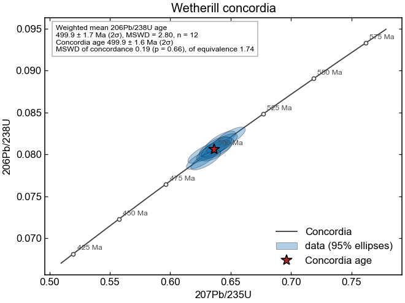
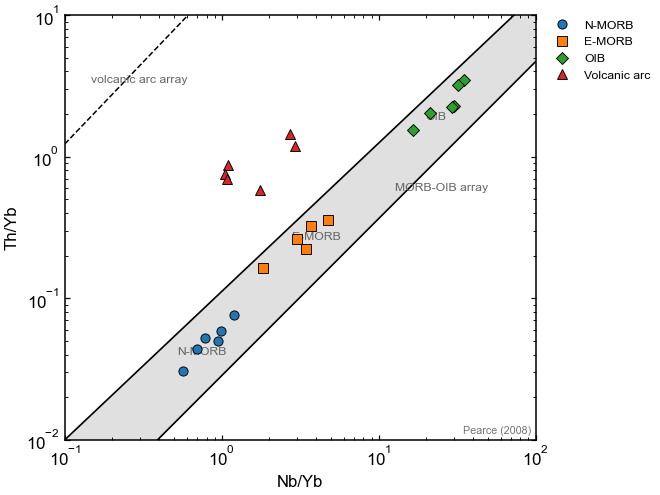
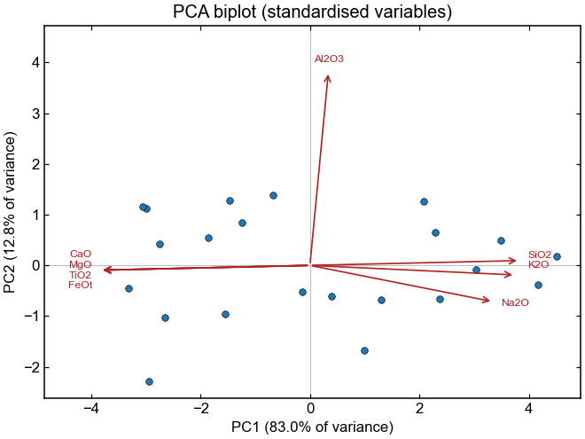
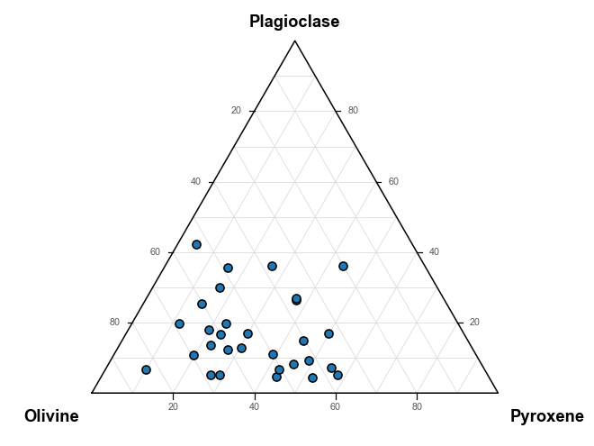
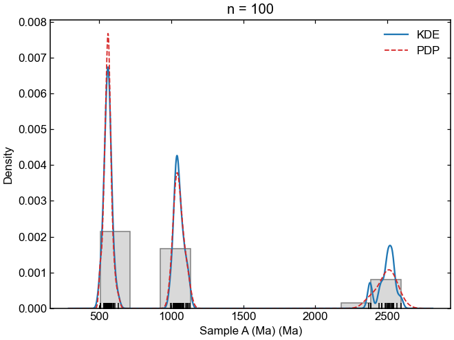
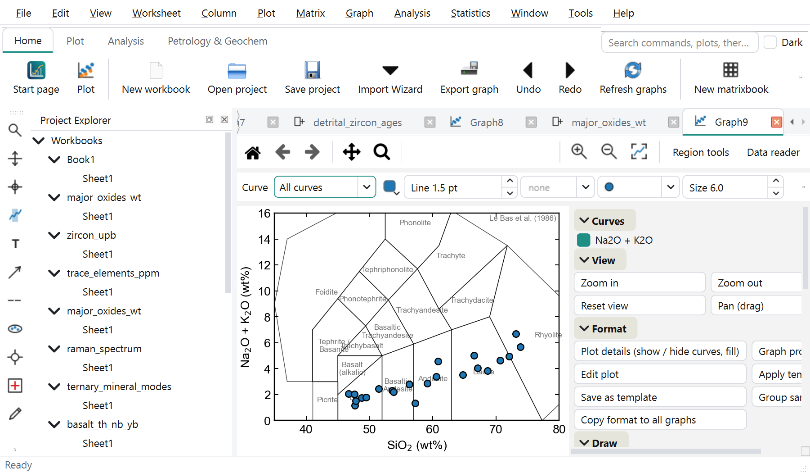

Gallery
Each figure below comes straight from one of the example data sets that ship with the app.








PlotBench combines spreadsheet-style graphing and peak fitting with petrology, mineral chemistry, thermobarometry and U-Pb geochronology. No coding, no Python or R to install.
Windows · macOS · Linux | Free and open source (MIT License)

Earth scientists usually move their data between five or six programs to get from raw analyses to a finished figure. PlotBench does all of it in one workbook, and writes every result back into the sheet as a new column.
83 plot types, journal-sized export to PNG, TIFF, PDF, SVG and EPS with a true-size preview, multi-panel figures with (a), (b), (c) labels, and editable text for Illustrator or Inkscape.
TAS, AFM, Harker, Frost and Shand diagrams, Pearce granite and basalt discrimination, chondrite- and mantle-normalised spider diagrams, ternary plots and the CIPW norm.
Mineral formulae from oxide wt%, Fe3+ by charge balance (Droop 1987), and amphibole, pyroxene and feldspar classification.
45 thermometers, barometers and oxybarometers, including Putirka (2008), Holland & Blundy (1994), Ti-in-zircon, Ti-in-quartz, Zr-in-titanite, Ghiorso & Evans (2008) Fe-Ti oxides and Loucks et al. (2020) zircon. A solver finds P and T together.
Wetherill and Tera-Wasserburg concordia, concordia and weighted-mean ages, York isochrons, Stacey & Kramers (1975) common-Pb correction, discordance filtering, and detrital KDE and PDP plots.
A Peak Analyzer for Raman, FTIR and XRD spectra with baselines and Gaussian, Lorentzian, pseudo-Voigt and Voigt peaks; 47 nonlinear fit models with confidence bands.
t-tests, ANOVA and post-hoc tests, non-parametric tests, PCA, clustering, discriminant analysis, regression, and mixed models.
Column names such as SiO2, FeOt, La or 207Pb/235U are recognised automatically. Masked rows drop out of every plot and calculation, and values below detection are handled.
A built-in manual with screenshots, 27 example data sets that open with a finished graph, Ctrl+K command search, and light and dark themes.
Each figure below comes straight from one of the example data sets that ship with the app.





Each of these tools is excellent at what it was built for, and PlotBench owes a lot to them. PlotBench's aim is to bring their main jobs into one place, with no coding.
| Software | Interface | Geochemical diagrams | Thermobarometry | U-Pb geochronology | General graphing and peak fitting | Cost |
|---|---|---|---|---|---|---|
| PlotBench | Desktop app | Yes | Yes, 45 methods | Yes | Yes | Free, open source |
| OriginPro | Desktop app | Through add-ons | No | No | Yes, the benchmark | Commercial |
| GCDkit | R with a GUI | Yes, extensive | Saturation thermometry | No | Limited | Free, needs R |
| pyrolite | Python library | Yes | No | No | Through code | Free, needs Python |
| Thermobar | Python library | Limited | Yes, the largest library | No | Through code | Free, needs Python |
| IsoplotR | Web app or R | No | No | Yes, the reference tool | No | Free |
| LabPlot / Veusz | Desktop app | No | No | No | Yes | Free, open source |
For a specialised task, such as a full geochronology reduction or the widest range of mineral-melt calibrations, IsoplotR and Thermobar go further than PlotBench and are worth using alongside it.
Version 1.30.0. All files are on the Releases page.
tar xzf PlotBench-*.tar.gz && ./PlotBench/PlotBenchIf PlotBench helps your research, please cite it with the Cite this repository button on GitHub, and cite the papers behind the diagrams and calculations you use; the app names each one. Bug reports and ideas are welcome on the issue tracker.